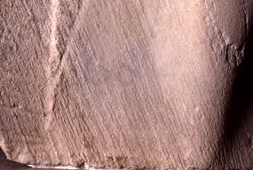

| Fig.
1. One British newspaper's view of the 930s cleaning of the Parthenon
sculptures.(Unsourced cutting in British Museum Greek and Roman Department
scrapbook) |
|
| Fig.
2. The Temporary Elgin Rom. Oil on canvas, signed Archibald Archer,
1819. British Museum. |
 |
| Fig.
3. The 'Elgin Room' of the British Museum at the time of the cleaning
showing the hoarding around the newly made entrance into Duveen's
gallery. The recently cleaned north frieze cavalcade shows white against
the as yet uncleaned frieze, metopes and casts. |
|
Fig.
4. North frieze block XXXIII showing extensive biological corrosion.
|
|
| Fig.
5. East pediment figure O. Head of a horse of Selene. Detail of weather
erosion of the marble grain. |
 |